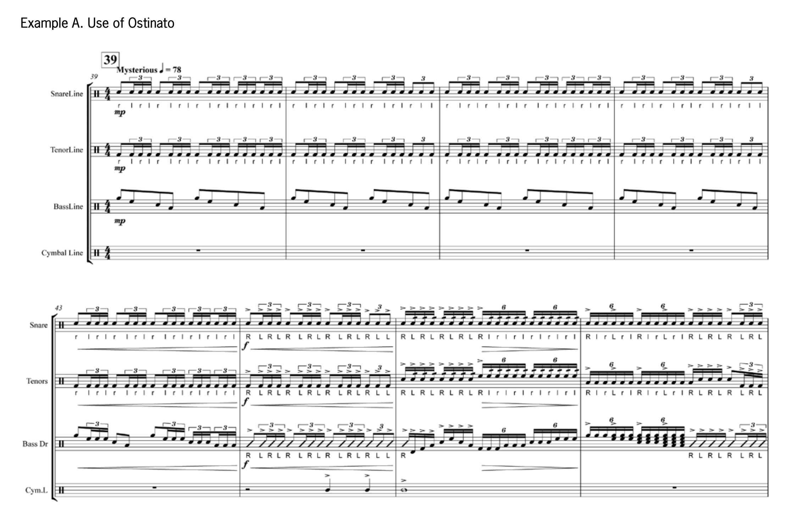
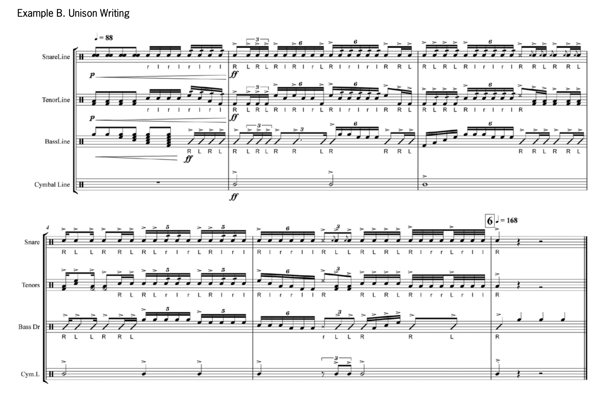
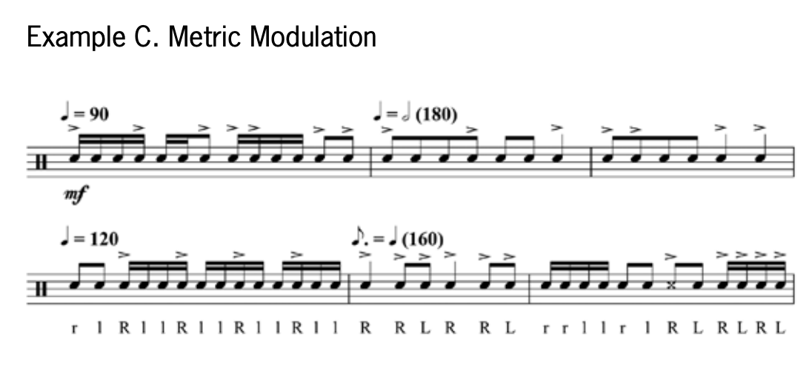
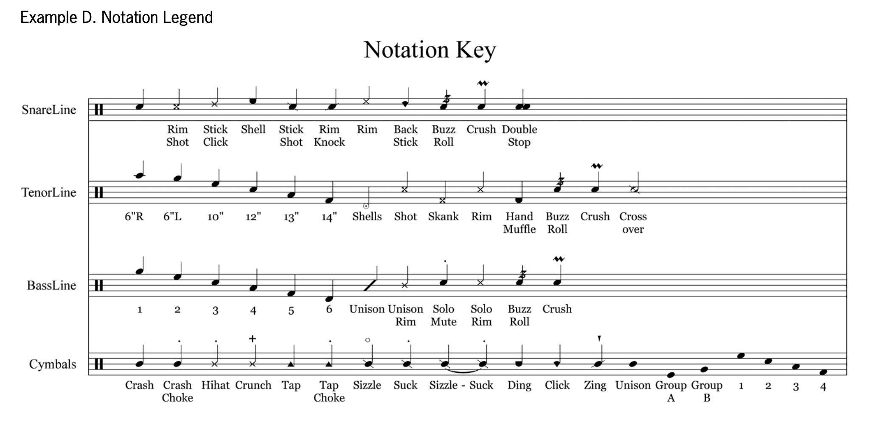
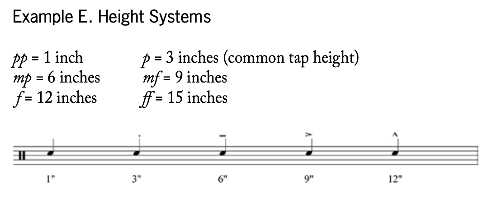
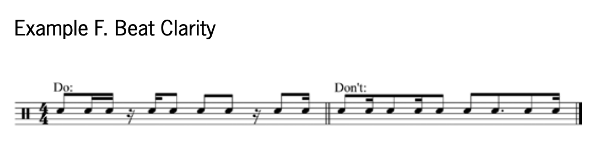

Introduction
A panel discussion on writing and arranging for marching percussion, specifically for the battery instruments, was held at the 2012 Iowa Day of Percussion. This article represents some highlights from the event along with several other ideas from my own experience in writing for high schools and colleges. The information should help aspiring arrangers in getting started while possibly giving new ideas to experienced writers. The specific topics include: the prewriting process, tips for writing, completing the project, and advice on competing for arranging work.
Reasons to Arrange
Initially, there are several questions to consider: Why are you arranging? Are there no parts yet written? Are the parts that came published with the wind score not up to your expectations? In Paul Buyer’s 1999 DMA document, Marching Percussion Arrangements for the Enhancement of Essential Performance Skills, he analyzed many stock arrangements and concluded that a significant problem exists from a lack of positive musical experience (also see Buyer’s 1997 Percussive Notes article, “An Evaluation of Marching Percussion Stock Chart Arrangements,” Vol. 35, No. 2, p. 39).
If the chart comes with percussion parts, those parts may not fit the ensemble technically or musically. For example, some arrangements may come with three tenor drum parts (“trios”) and four tonal bass drum parts, but the drumline may have quad or quint tenor drum sets and more numbers in the bass drum section. The percussion parts often come in a “one size fits all” arrangement, and (if they are used) there may still be the need to enhance (“beef up”) or simplify (“water down”) the parts.
Another reason to arrange is to gain a greater understanding of music and the techniques of playing marching percussion instruments. Arranging allows an individual the opportunity to discover what is possible to play and also what is important to include from an educational standpoint. Arranging ensures that students are exposed to the concepts the arranger values and the prospect of learning how to execute them well.
Another motivating factor in getting involved in arranging is to gain job experience. Serving as an arranger may make you a stronger candidate for a position on a marching staff. Being able to write for marching percussion may help you land a graduate teaching assistantship or a teaching gig at a high-powered high school marching band program or indoor percussion group. It can also be a nice source of income. If you have enough clients, arranging can turn into a large part of your professional activities, as some arrangers are able to support themselves by freelance arranging work.
Getting the Details
- Timeline: How soon will the music need to be completed?
- Goals: What are the goals of the program? Is the show competitive or recreational? Does the group perform one show per season or several?
- Instructor: Does the group have specialized instruction as a percussion section? Is the group student led, band-director taught, or is there a percussion instructor?
- Rehearsals: How often does the group rehearse? (This is a critical consideration in arranging, as the rehearsal time strongly impacts what can be accomplished consistently.) How long is the performance season?
- Instrumentation: How many will be marching in the battery? Does the ensemble march tenor drums with three, four, five, or six drums? How many bass drums are available and what are the sizes? Can extra instruments be mounted onto the drums (e.g., cowbells, jam blocks, ribbon crashers, etc.)?
- Staging on field: Where will the battery be located on the field at any given point in the piece?
- Support: Will the group expect the arranger to contribute after the completed product is delivered (i.e., re-writes or instructing)?
- Rate: How much will you charge for your work? Are you willing to write pro bono?
- Wind book: Is a wind score available? Is an audio version (live or MIDI) available as well?
- Show design: Are you arranging to a previously arranged wind chart? Are you part of a larger design team that will create an overall theme and concept for the show?
- Experience: How has the group’s previous shows and music fared? What is the ability level of the players on the line?
If possible, get examples of the percussion technique/exercise book, as well as examples of the group’s previous shows. These can serve as a guide to the level and experience of the group. Try to ascertain the students’ level from the band director or percussion instructors. The best way to assess the ensemble is to get audio and/or video recordings of the group or to personally observe rehearsals so you can evaluate their playing ability and level for yourself.
Listen
Unless you are asked to work on a show with originally composed music, someone, somewhere has probably arranged the same music that you are planning to arrange. It is not necessary to reinvent the wheel, as you can make adjustments to previous arrangements that show your creative side while working well for the ensemble you are writing for. Listening to existing arrangements, as well as to the original version of the show (whether orchestral, band, or other ensemble), can provide great inspiration. The source material can serve as great fodder and help you bring out subtle intricacies that the wind score does not cover. For example, if the work you are arranging is Samuel Barber’s “Medea’s Dance of Vengeance,” you will benefit by not just listening to the New York Philharmonic performing the original, but also by listening to Star of Indiana’s 1993 arrangement of the work. If you are arranging a classic rock show, try to highlight the same hits and drum fills that pay homage to the original.
The world of marching percussion is constantly evolving and pushing the boundaries of what is possible. Stay current in the activity by attending drum corps, indoor percussion, and marching band competitions. The Internet opens the door to an archive of great drumming moments. There are hours of outstanding drumming online (e.g., YouTube) that can teach and inspire you. Listen to how other percussion sections create great moments of impact, how they transition, how they treat technical and visual demands, and how musically expressive an ensemble can be
Getting Experience
Consider this paradox: Experience is gained by having a job, but jobs are earned by having experience. Before you have enough clients for a wait list, you will need to establish yourself as an arranging authority. Begin by writing or arranging anything you can. If you are currently teaching a marching percussion section, ask if you can develop the technique book and write your own exercises. Instead of using the usual warm-ups (such as “8 on a hand”), create original exercises that focus on the same techniques and concepts. Other opportunities may appear in writing a cadence, an on-field warm-up, or even parts to tunes that are played in the stands during football game. After marching season is over, arrange or compose a percussion ensemble piece based on marching percussion techniques. Gain experience by writing anything the percussion section may need.
As a member of a college marching band, you may be able to find arranging opportunities. This can range from the above-listed projects with the high school to full halftime-show charts. Some college marching band programs have a new show (drill and parts) every other week. Some college drumline instructors and band directors welcome the opportunity to have help in writing show parts. There are many options when beginning to work as an arranger, but it will take some effort and volunteerism to get started.
Once you have an arranging job, you will need to settle on a fee for your services. People go about determining their rate in different ways. Some prefer being paid per measure, while others prefer being paid per second or minute of written music; others elect to be paid by movement (such as the opener, ballad, closer, etc.) or by a flat rate for the entire thing. You will need to assess how much your time and creativity are worth and whether there is a dollar amount that is unacceptable for writing music. Remember to draw up a contract to help ensure you are paid for your services.
Tools of the Trade
With today’s technology it has become easier to create parts that rival the appearance of those produced professionally by a publisher. Computer-based notational software (such as Sibelius or Finale) is prominent in the contemporary marching activity. The days of writing by hand are becoming less acceptable as we move to an era where everything is computerized.
In addition to notational software, the use of sample sound libraries such as Virtual Drumline helps create a realistic playback of your music. Using these programs in tandem allows you to instantly hear your music cleanly with correct interpretation of rhythms and tempo. Even though these programs may be very costly, they are essential in today’s market.
Writing Ideas
Here are some strategies that have been used to get the “creative juices” going.
-
Flow Chart
Create a flow chart highlighting the different phrases and parts of the show. The flow chart should include tempo markings, formal structure or rehearsal marks, measure numbers, wind parts (on field staging), and percussion parts. Jim Casella goes into great detail about how he uses a flow chart in his article, “Arranging for Pit and Battery” in the August 1998 issue of Percussive Notes (Vol. 36, No. 4, p. 29). The completed flow chart will help you envision the whole composition before you write a note. It will also help you think about voicing, textures, and staging, and help prevent overwriting.
Once a flow chart is created, it is strongly recommended that you lay out the percussion score from beginning to end. Create all the details including title, rehearsal marks, repeat signs and the number of measures. This will make inputting your notes smoother without having to stop the creative process to continually create elements of the score as you write.
Laying out the score first also creates the opportunity to add some of the wind score to the percussion score, which can help in hearing how all the parts fit together. Being able to hear the melody and bass lines is a common approach, but feel free to add any counter-lines or other important components.
It is not necessary to start writing at the first measure of the piece. If you have ideas that you think would sound great at rehearsal letter D, start there and work around the score, returning back to the beginning as the inspiration strikes. Although the piece is played top to bottom, it does not have to be created that way. If this approach is adopted, care should be taken to examine the transitions from phrase to phrase to ensure they can be executed smoothly.
-
Creative Improvisation
When creating percussion parts, listen to the audio file repeatedly until you can reliably hear the wind parts in your head. You can then try improvising with the music in your head or by drumming with the recording. Try singing a bass-line part, snare drum part, etc. with the wind recording playing. Keep a snare and tenor practice pad next to your designated writing area and play with the audio track. Repeat this multiple times and sketch out the parts so they may be adjusted later if needed.
-
Less is More
It is not necessary to fill every measure in the piece with notes. Let the music breathe by using space. This approach helps stronger impact moments stand out, as those will contrast with the thinner or lightly scored parts. Try doing a call and response between the snares and tenors to keep the ear refreshed and the textures thinner. The use of ostinati is a great way to build rhythmic tension and keep the music driving (e.g., Maurice Ravel’s use of the two-bar snare drum ostinato to develop “Bolero”). Every bar does not have to be an absolute statement of the totality of your rudimental knowledge. Repeating bars or phrases will make learning the part easier and will also help tie the piece together. (See Example A.)
After studying the wind score and writing your flow chart, consider which wind instruments in each phrase would match up well with the battery instruments. Try pairing up and writing for like instruments together, such as trumpets with snares and low brass with the bass line.
A simple way to start arranging for the full battery section can begin with writing a snare part. From there you can have the same part be split up in the bass line and moved around the drums for the tenor section. Keep in mind the overall goal and function of the phrase within the overarching show concept (flow chart). (See Example B.)
You can create naturally occurring crescendos through the use of the additive process. This is mainly used with the bass line, but the same concept can be used in the snare and tenor line. A run down the bass line, starting with the smaller drums and going to the larger ones, adds some motion and depth toward a strong impact point. The opposite can be true for naturally occurring decrescendos. Subtract people from a part and go up the bass drum line from the larger to smaller drums.
You can change the color and timbre of the instruments with subtle changes. Try playing in different zones of the drums (center or edge), play on the rims or shell, use stick-on-stick, and incorporate hand dampening. Experiment with switching implements to a smaller stick or a brush or felt mallets to get different effects out of the same set of drums.
If there are tempo changes in the chart, utilize metric modulations to seamlessly transition from one section to one another. Pulling a tempo change out of the air can be tricky for an ensemble, but metric modulation can make transitions more consistent. Here are a few examples of simple approaches to metric modulations that can help tempo changes happen consistently. (See Example C.)
 -
Technique vs. Tempo
Carefully consider the technical demands of writing for the marching percussion section. What looks good on paper and what sounds good on the computer playback may not be the best determining factor of whether the arrangement will be successful. Playing sixteenth-note splits at quarter note = 180 for the bass line or a sixteenth-note roll at the same tempo for the snare line might sound really interesting, but it will be very difficult to play cleanly and consistently. Review your goals and how much time the ensemble can dedicate to learning and cleaning the music.
The percussion score should highlight and enhance the wind score while also supporting the overall concepts for the show design. During different parts of the show, melodic drumming may be great to use, while at other times more notes and technical displays of virtuosity may be needed. One goal I focus on is making the percussion score complete enough to stand alone without the wind parts. There is more than one way to achieve your arranging goals. Keep an open mind (and open ears) to find out what works best for you in the various musical situations.
Final Product
The finished product should look like a team of engravers meticulously placed every note in the correct spot. The parts should be musically complete, including dynamics, stickings, playing zones, and any other special instructions so that valuable rehearsal time will not be lost going over them. If possible, write the drill segments in the parts to aid in the players’ learning process. Writing in the drill segments ensures that it gets done correctly and that everyone is on the same page during rehearsals. Avoid awkward page turns that may disrupt the flow of the music. Make the font size for the score and parts large enough to read, but don’t waste paper.
Along with the percussion score, provide a notation legend to help avoid confusion with different noteheads. Example D shows the notation legend I developed with the sound samples I use with the program Virtual Drumline.
Another helpful resource is a description of your dynamics and height system. Although the percussion instructor can sometimes determine the height system, a firm foundation of how you envision the parts being executed will aid greatly in interpreting your music. Some drum instructors use dynamics that correspond to different heights, and some use different articulation symbols. Example E shows a sample of the different types:
For ease of reading and learning the parts, make sure the parts are beamed logically (showing each beat clearly). Like the snare drum etudes in Anthony Cirone’s Portraits in Rhythm, you can use different ways to notate things rhythmically for musical purposes, but think about how much additional time it may take to learn the figure in the less uncommon notation. (See Example F.)
Marketing Yourself
To help with marketing yourself, decide what you can do as an arranger and how to best represent your arranging abilities. Determine what your potential customers expect and what you can present to them that will set you apart from other arrangers. In addition to the score and parts that are expected, there are additional items that might attract people to hire you over others. Your use of notation software may help you create realistic practice audio tracks for each section. These tracks could be at a variety of slower practice tempi and gradually increase up to the performance tempo (include a count-off/tap-off for each track). Be available for rewrites so you can be used as a resource later in the season. Volunteer to offer feedback by making a visit during a rehearsal or watch a video of a performance.
Many states have a band association where you can find a list of programs across the state. With today’s technology, you can research and find almost any school that has a band program and send them your materials. Another idea for earning arranging gigs is to team up with a wind arranger or other percussion arrangers. Sometimes percussion books can be split up between a battery and a pit arranger. Joining an arranging team can provide additional opportunities for work and help consolidate/share marketing efforts.
Create a website to showcase your arranging efforts. Highlight your arranging, teaching, and other experiences from your resume that demonstrate your qualifications for the position. List the groups you have worked with and written for. You could also post samples of your writing with audio examples of computerized recordings—or even better, live performances. Be sure that you have copyright clearances for any work that you arrange or that you decide to post online.
The best way to market yourself is through the recommendations of your peers and through the band directors. Band directors communicate with one another and share vendors, band repertoire, and other things about their work. They may also recommend drum arrangers that they have had good experiences with and mention the names of the individuals they did not. Be professional, optimistic and enthusiastic. There are great opportunities for those who are prepared and willing to work.
Code
(Required Section of Project)
.container {
width: 100%;
background-color: #f9f7f7;
display: block;
margin-left: 200px;
}
.example-image {
max-width: 600px;
width: 100%;
display: block;
margin: 0 auto;
padding: 20px 0;
}
nav {
color: #3f72af;
background-color: #dbe2ef;
position: fixed;
width: 200px;
height: 100%;
min-width: 200px;
top: 0px;
left: 0px;
}
.navlink {
display: flex;
flex-direction: column;
padding: 20px 5px;
background-color: #dbe2ef;
}
footer {
background-color: #112d4e;
height: fit-content;
padding-top: 20px 100px;
}